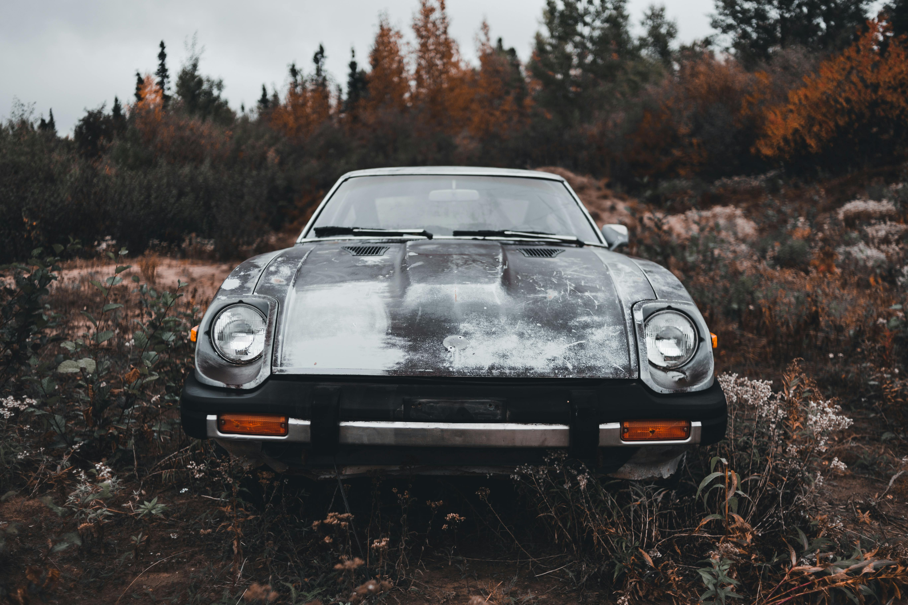

"Datsun 280ZX (S130) 1978-1983"
The infamous 280ZX. Following the pain and suffering of the 80s, Datsun too had to make some difficult decisions. This car was developed, with all the right ingredients! Other than it's overall ugly styling. Datsun's first sportscar to feature Electronic Fuel Injection, the 280Z recieved the X to express the Luxury these cars provide. This marked Datsun's pivot, from Sport/Race cars to a broader market of GT (Grand Touring) cars!. The Cushy leather seats, Digital Dash, and Factory Turbocharged L28 gave this car an incredible kick, and despite it's lacking looks, they sold very well!
- Z-Car wiki
- Z-Car community page